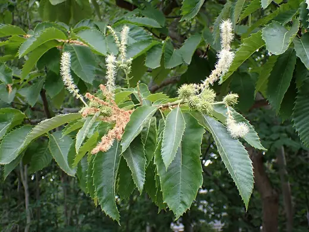

Chinquapin
Chinquapin is a wild nut you can forage from September to October in Southeast and Northeast. Shrubby southern chestnut with toothed leaves; spiny burs hold a single small, sweet nut.

When is chinquapin in season in the United States?
Chinquapin is usually in season September to October. Timing shifts with weather, latitude and altitude.
Where does chinquapin grow in the United States?
Chinquapin grows in Alabama, Arkansas, Connecticut, Delaware, District of Columbia, Florida, Georgia, Kentucky, Louisiana, Maine, Maryland, Massachusetts, Mississippi, New Hampshire, New Jersey, New York, North Carolina, Oklahoma, Pennsylvania, Rhode Island, South Carolina, Tennessee, Texas, Vermont, Virginia, West Virginia. Regions: Southeast, Northeast.
How do you recognise chinquapin?
Shrubby southern chestnut with toothed leaves; spiny burs hold a single small, sweet nut.
How do you harvest chinquapin?
Gather nuts from the ground once they fall, discarding any with holes or mould. Leave plenty for wildlife, which depends on them for winter.
How do you eat chinquapin?
Raw or roasted like chestnuts.
How do you store chinquapin?
Refrigerate or dry.
What is chinquapin good for?
Calories.